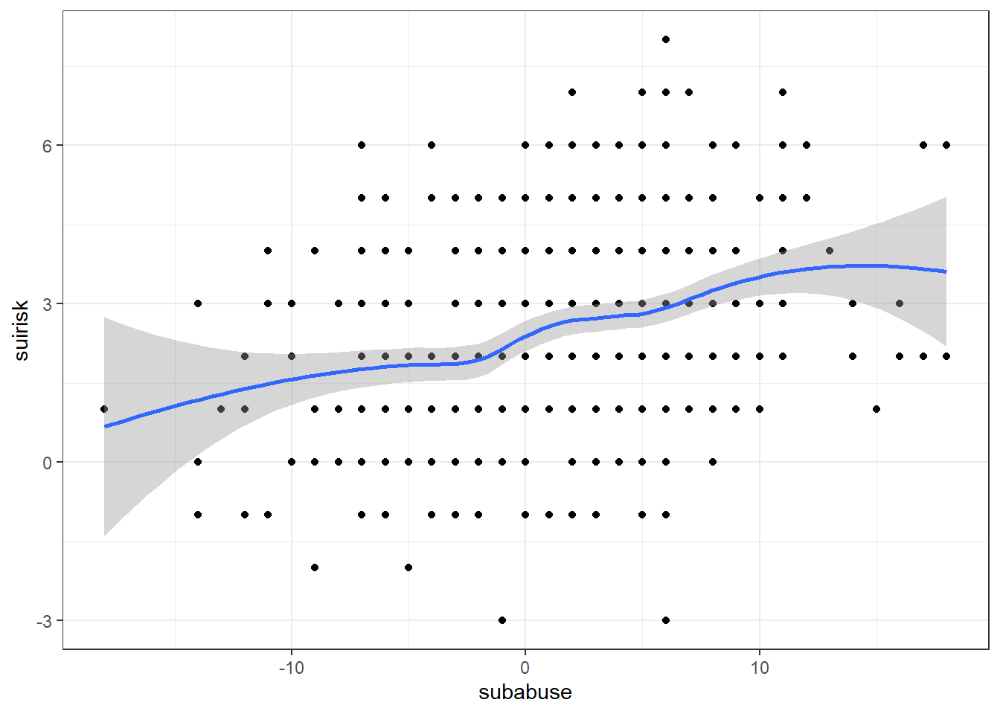
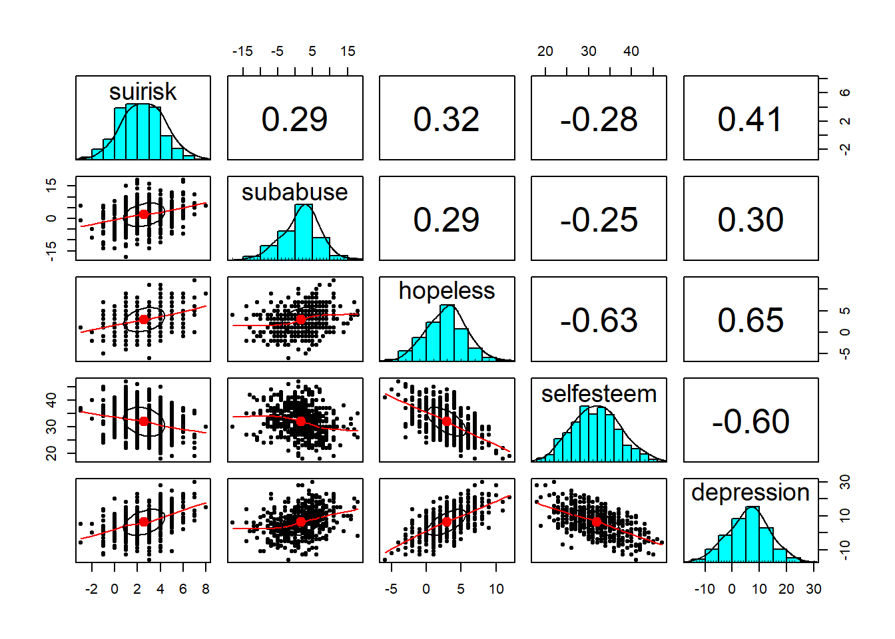
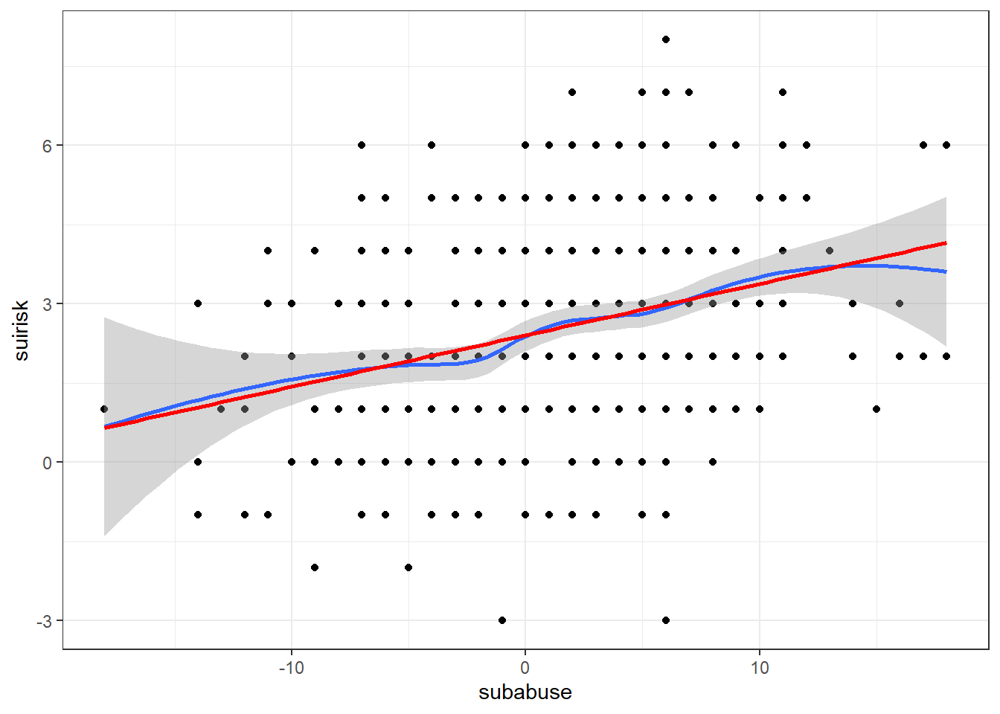

Chapter 29 Week 6 - Home
Exercise based on:
Metha, A., Chen, E, Mulvenon, S. and Dode, I. (1998). A Theoretical Model of Suicide Risk. Archives of Suicide Research, 4, p. 115-133.
Download the dataset “suiciderisk.sav” here. This is a dataset that was simulated from the covariance matrices in the original paper presented on p.123. The idea behind simulation is that you can recreate the dataset from some summary statistics. The covariance matrix suffices for doing this, as it summarizes all relations between all variables (see http://en.wikipedia.org/wiki/Computer_simulation for an introduction). The new data matrix almost exactly corresponds to the data as presented in the paper, albeit that there are inconsistent data cells (negative- or our of range values for the scale of the original variables). You don’t have to worry about this now.
In the take home- and class exercise we will investigate the dataset on suicidesisk and test whether there is a possible moderation of gender.
29.0.1 Question 1
Baron and Kenny (1986) present four cases to illustrate how moderation can be studied. If gender is our moderator, and either depression, hopelessness, selfesteem and/or substance abuse our independent variables, what case should we use to investigate moderation?
Click for explanation
Case 2: dichotomous moderator, continuous independent variables
29.0.2 Question 2
First, run bivariate correlations of all continuous independent variables with suicide risk. Do you think it is useful to investigate these predictors? What if one one the correlations is non-significant. Is it then still useful to study moderation?
Note: You can obtain correlations using cor() or psych::corr.test()
Click for explanation
A basic correlation matrix for the first 5 variables:
cor(data[, 1:5])## suirisk subabuse hopeless selfesteem depression
## suirisk 1.0000000 0.2931462 0.3231625 -0.2751558 0.4071431
## subabuse 0.2931462 1.0000000 0.2854853 -0.2478123 0.2991709
## hopeless 0.3231625 0.2854853 1.0000000 -0.6266401 0.6464750
## selfesteem -0.2751558 -0.2478123 -0.6266401 1.0000000 -0.6003697
## depression 0.4071431 0.2991709 0.6464750 -0.6003697 1.0000000A correlation table with p-values can be obtained using the psych::corr.test() function:
library(psych)
corr.test(data[, 1:5])## Call:corr.test(x = data[, 1:5])
## Correlation matrix
## suirisk subabuse hopeless selfesteem depression
## suirisk 1.00 0.29 0.32 -0.28 0.41
## subabuse 0.29 1.00 0.29 -0.25 0.30
## hopeless 0.32 0.29 1.00 -0.63 0.65
## selfesteem -0.28 -0.25 -0.63 1.00 -0.60
## depression 0.41 0.30 0.65 -0.60 1.00
## Sample Size
## [1] 521
## Probability values (Entries above the diagonal are adjusted for multiple tests.)
## suirisk subabuse hopeless selfesteem depression
## suirisk 0 0 0 0 0
## subabuse 0 0 0 0 0
## hopeless 0 0 0 0 0
## selfesteem 0 0 0 0 0
## depression 0 0 0 0 0
##
## To see confidence intervals of the correlations, print with the short=FALSE optionYes, correlations are similar to those in paper, and are all significant. Even when correlations are n.s., it is still useful to investigate moderation: there might be a suppression effect
29.0.3 Question 3
Examine the relationships between suicide risk and the four continuous predictors visually. What do you think about the relations?
Click for explanation
29.0.3.1 A psych solution
The package `psych’ contains a function to help us visually check assumptions, such as linearity:
pairs.panels(data[, 1:5],
density = TRUE, # show density plots
ellipses = TRUE # show correlation ellipses
)
29.0.3.2 Ggplot to build plots
In this case, psych is easier. But generally, we can make any plot we want using ggplot2. In ggplot, we add one plot element at a time. Here is an example for one variable:
library(ggplot2)
ggplot(data, aes(x = subabuse, y = suirisk)) +
geom_point() + # Add scatter
geom_smooth() + # Add smooth trend
theme_bw() # Add black/white theme
You could also add a linear trend line:
ggplot(data, aes(x = subabuse, y = suirisk)) +
geom_point() + # Add scatter
geom_smooth() + # Add smooth trend
theme_bw() + # Add black/white theme
# Add linear trend line (without confidence bound and red in color)
geom_smooth(method = "lm", color = "red", se = FALSE)
This seems linear; you can check the other variables!
29.0.4 Question 4
Build the scatterplots again, but now map participants’ gender to the colour of the dots and smooth line. Do your conclusions differ from question 3?
Click for explanation
29.0.4.1 A psych solution
Again, psych has a standard solution for this situation:
pairs.panels(data[, 1:5], bg = c("red", "blue")[data$gender], pch = 21)
In ggplot, we can make the plots more detailed. We can map gender to the color of the dots and smooth line using aes(colour = gender):
ggplot(data, aes(x = subabuse, y = suirisk, colour = gender)) +
geom_point() + # Add scatter
geom_smooth() + # Add smooth trend
theme_bw() # Add black/white theme
This seems linear; you can check the other variables! There are also some differences by gender, in range and steepness.
29.0.5 Question 5
Baron and Kenny (1986) note the correlational method (as we just used) has two serious deficiencies. We can investigate only one of them. Which? Please investigate whether this potential problem exists for the moderator gender.
Note: Use psych::describeBy() or car::leveneTest
Click for explanation
The variances might not be equal for all levels of gender. We can do a preliminary investigation using describeBy; a version of the describe that splits the data by group.
library(psych)
describeBy(data[, 1:5], group = data$gender)##
## Descriptive statistics by group
## group: females
## vars n mean sd median trimmed mad min max range skew kurtosis
## suirisk 1 329 2.47 1.80 2 2.45 1.48 -2 7 9 0.09 -0.38
## subabuse 2 329 0.94 6.45 1 0.89 7.41 -18 18 36 0.05 -0.24
## hopeless 3 329 2.86 2.83 3 2.84 2.97 -6 12 18 0.11 0.10
## selfesteem 4 329 31.38 5.17 31 31.37 5.93 18 45 27 0.04 -0.42
## depression 5 329 6.07 7.60 6 6.05 7.41 -16 28 44 -0.03 -0.18
## se
## suirisk 0.10
## subabuse 0.36
## hopeless 0.16
## selfesteem 0.29
## depression 0.42
## ------------------------------------------------------------
## group: males
## vars n mean sd median trimmed mad min max range skew kurtosis
## suirisk 1 192 2.75 1.84 3 2.77 1.48 -3 8 11 -0.12 0.28
## subabuse 2 192 3.09 2.69 3 3.11 2.97 -5 9 14 -0.16 -0.12
## hopeless 3 192 2.98 2.74 3 3.03 2.97 -5 9 14 -0.19 -0.06
## selfesteem 4 192 32.91 5.64 33 32.81 5.93 18 47 29 0.14 -0.41
## depression 5 192 6.39 7.75 7 6.46 7.41 -13 30 43 -0.06 0.24
## se
## suirisk 0.13
## subabuse 0.19
## hopeless 0.20
## selfesteem 0.41
## depression 0.56The variances turn out to be roughly the same for most variables, but there is a large difference in the variance of nartotic substance use. Let’s apply Levene’s test, which lives in the car package:
library(car)
leveneTest(y = data$subabuse, group = data$gender)If we want a Levene’s test for all five continuous variables, it can be helpful to apply the function to the 5 columns of data. The function lapply() applies a second function (leveneTest()) to every element of a list; in this case - the five columns. The argument group stays the same for each variable:
lapply(data[1:5], leveneTest, group = data$gender)## $suirisk
## Levene's Test for Homogeneity of Variance (center = median)
## Df F value Pr(>F)
## group 1 0.1234 0.7255
## 519
##
## $subabuse
## Levene's Test for Homogeneity of Variance (center = median)
## Df F value Pr(>F)
## group 1 114.51 < 2.2e-16 ***
## 519
## ---
## Signif. codes: 0 '***' 0.001 '**' 0.01 '*' 0.05 '.' 0.1 ' ' 1
##
## $hopeless
## Levene's Test for Homogeneity of Variance (center = median)
## Df F value Pr(>F)
## group 1 0.2901 0.5904
## 519
##
## $selfesteem
## Levene's Test for Homogeneity of Variance (center = median)
## Df F value Pr(>F)
## group 1 0.9124 0.3399
## 519
##
## $depression
## Levene's Test for Homogeneity of Variance (center = median)
## Df F value Pr(>F)
## group 1 0.0357 0.8502
## 51929.0.6 Question 6
Baron and Kenny also state how this problem might be resolved by looking at regression coefficients. Run a multiple regression model, with suicide risk as dependent variable, and all 4 independent variables as predictors. Run this model separately for both genders. Do you find any differences in the regression coefficients? (unstandardized)
Click for explanation
# In the lm() function, ~ . means: use all predictors
summary(lm(suirisk ~ ., data = data[data$gender == "females", 1:5]))##
## Call:
## lm(formula = suirisk ~ ., data = data[data$gender == "females",
## 1:5])
##
## Residuals:
## Min 1Q Median 3Q Max
## -4.0022 -1.3247 0.0047 1.2927 4.1531
##
## Coefficients:
## Estimate Std. Error t value Pr(>|t|)
## (Intercept) 1.9862150 0.8373132 2.372 0.018270 *
## subabuse 0.0587404 0.0154119 3.811 0.000165 ***
## hopeless 0.0452029 0.0458534 0.986 0.324961
## selfesteem -0.0001569 0.0237796 -0.007 0.994741
## depression 0.0502616 0.0162516 3.093 0.002156 **
## ---
## Signif. codes: 0 '***' 0.001 '**' 0.01 '*' 0.05 '.' 0.1 ' ' 1
##
## Residual standard error: 1.671 on 324 degrees of freedom
## Multiple R-squared: 0.1515, Adjusted R-squared: 0.141
## F-statistic: 14.46 on 4 and 324 DF, p-value: 7.1e-11summary(lm(suirisk ~ ., data = data[data$gender == "males", 1:5]))##
## Call:
## lm(formula = suirisk ~ ., data = data[data$gender == "males",
## 1:5])
##
## Residuals:
## Min 1Q Median 3Q Max
## -5.9171 -1.0382 -0.0001 1.0582 3.9736
##
## Coefficients:
## Estimate Std. Error t value Pr(>|t|)
## (Intercept) 1.11735 1.11623 1.001 0.31812
## subabuse 0.12190 0.04399 2.771 0.00615 **
## hopeless 0.03359 0.06130 0.548 0.58441
## selfesteem 0.01272 0.02948 0.431 0.66665
## depression 0.11540 0.02235 5.163 6.19e-07 ***
## ---
## Signif. codes: 0 '***' 0.001 '**' 0.01 '*' 0.05 '.' 0.1 ' ' 1
##
## Residual standard error: 1.528 on 187 degrees of freedom
## Multiple R-squared: 0.3238, Adjusted R-squared: 0.3093
## F-statistic: 22.38 on 4 and 187 DF, p-value: 4.057e-15A small difference for substance use (.12 males, .06 females) and depression (.05 females, .115 males)? Other than that, they are similar.
29.0.7 Question 7
What do you think, does it make sense to study the moderating role of gender in a model that explains suicide risk?
Click for explanation
Yes, all assumptions hold, so fine to do it.
29.0.8 Question 8
One way to study moderation (and this is something you might have done in an earlier statistics course), is to compute interaction terms of the moderator variable with the independent variables. R does this automatically, if you use the multiplication symbol * in your regression equation.
Run a hierarchical regression analysis: Build two regression models, and include all independent variables and gender in the first model, and add the interaction terms in the second model. Then, compare the fit of the two models using anova() Do you find that the interaction variables explain part of the variance in suicide risk over and above that of the independent variables?
Click for explanation
reg_1 <- lm(suirisk ~ ., data)
summary(reg_1)##
## Call:
## lm(formula = suirisk ~ ., data = data)
##
## Residuals:
## Min 1Q Median 3Q Max
## -5.7146 -1.1199 -0.0062 1.1489 4.2356
##
## Coefficients:
## Estimate Std. Error t value Pr(>|t|)
## (Intercept) 1.971013 0.659121 2.990 0.00292 **
## subabuse 0.057529 0.014136 4.070 5.45e-05 ***
## hopeless 0.045793 0.036721 1.247 0.21296
## selfesteem -0.003881 0.018508 -0.210 0.83399
## depression 0.071918 0.013132 5.477 6.79e-08 ***
## gendermales 0.132756 0.154934 0.857 0.39192
## ---
## Signif. codes: 0 '***' 0.001 '**' 0.01 '*' 0.05 '.' 0.1 ' ' 1
##
## Residual standard error: 1.633 on 515 degrees of freedom
## Multiple R-squared: 0.2023, Adjusted R-squared: 0.1946
## F-statistic: 26.12 on 5 and 515 DF, p-value: < 2.2e-16reg_2 <- lm(suirisk ~ gender * subabuse + gender * hopeless + gender * selfesteem + gender * depression, data)
summary(reg_2)##
## Call:
## lm(formula = suirisk ~ gender * subabuse + gender * hopeless +
## gender * selfesteem + gender * depression, data = data)
##
## Residuals:
## Min 1Q Median 3Q Max
## -5.9171 -1.1597 0.0047 1.1552 4.1531
##
## Coefficients:
## Estimate Std. Error t value Pr(>|t|)
## (Intercept) 1.9862150 0.8119207 2.446 0.01477 *
## gendermales -0.8688675 1.4350193 -0.605 0.54513
## subabuse 0.0587404 0.0149445 3.931 9.64e-05 ***
## hopeless 0.0452029 0.0444629 1.017 0.30980
## selfesteem -0.0001569 0.0230584 -0.007 0.99458
## depression 0.0502616 0.0157588 3.189 0.00151 **
## gendermales:subabuse 0.0631559 0.0489630 1.290 0.19768
## gendermales:hopeless -0.0116150 0.0787379 -0.148 0.88278
## gendermales:selfesteem 0.0128741 0.0388335 0.332 0.74039
## gendermales:depression 0.0651349 0.0284552 2.289 0.02248 *
## ---
## Signif. codes: 0 '***' 0.001 '**' 0.01 '*' 0.05 '.' 0.1 ' ' 1
##
## Residual standard error: 1.62 on 511 degrees of freedom
## Multiple R-squared: 0.2208, Adjusted R-squared: 0.2071
## F-statistic: 16.09 on 9 and 511 DF, p-value: < 2.2e-16anova(reg_1, reg_2)R2 goes from .20 to .22, so small difference. This difference is significant. The only significant interaction effect is gendermales:depression.
29.0.9 Question 9
Build a basic regression model in lavaan, see the figure below. You have built this model before. Compare your lavaan results to your earlier findings. What do you conclude?

Click for explanation
library(lavaan)
model <- "suirisk ~ subabuse + hopeless + selfesteem + depression + gender"
fit <- sem(model, data)
summary(fit)## lavaan 0.6-9 ended normally after 18 iterations
##
## Estimator ML
## Optimization method NLMINB
## Number of model parameters 6
##
## Number of observations 521
##
## Model Test User Model:
##
## Test statistic 0.000
## Degrees of freedom 0
##
## Parameter Estimates:
##
## Standard errors Standard
## Information Expected
## Information saturated (h1) model Structured
##
## Regressions:
## Estimate Std.Err z-value P(>|z|)
## suirisk ~
## subabuse 0.058 0.014 4.093 0.000
## hopeless 0.046 0.037 1.254 0.210
## selfesteem -0.004 0.018 -0.211 0.833
## depression 0.072 0.013 5.508 0.000
## gender 0.133 0.154 0.862 0.389
##
## Variances:
## Estimate Std.Err z-value P(>|z|)
## .suirisk 2.636 0.163 16.140 0.000library(semPlot)
semPaths(fit, whatLabels = "est", rotation = 2)Same results, except for a small difference in the standard errors, that results from the fact we use Ordinary Least Squares (OLS)-estimation in R and Maximum Likelihood (ML) in lavaan. Apart from that, we can also estimate the correlations/covariances between the independent variables in lavaan, that we cannot estimate in R.
29.0.10 Question 10
Do you have any idea why we find a Chi-square value of exactly 0.0?
Click for explanation
There are no degrees of freedom (the model is identical to the saturated model) left. This means we want to estimate as many paths as there are sample moments. So, all covariances between variables are accounted for in the model, and there is no room for any deviation between our “model” and the data.
29.0.11 Question 11
Mehta et al (1998) state that the theory of suicide risk is more complicated than we so far modeled using regression models. The effects of self-esteem and depression are mediated through hopelessness, while depression also explains self-esteem. On page 117-118 they summarize their expectations about the effects in 6 hypotheses (H1 and H2a-e). Build a mediation model in lavaan based on these hypotheses. Leave gender out of the model for now.
Run the model, and see whether the model fits by looking at the Chi-square(df), it’s p-value, CFI and RMSEA. In case your model does not fit, can you make it fit the data by making an alteration to the model? Note that your Chi-square values might differ slightly from those presented by Mehta et al (1998), because of data simulation procedures.
Click for explanation
The model fits when a covariance is added between substance use and depression (see figure 1 in the article). Then, Chi-square(3) =9.4, p=.025 CFI=.992, RMSEA=.064. This is probably what Mehta et al. (1998) did as well, without showing us.
model <- "
suirisk ~ hopeless + depression + subabuse
hopeless ~ depression + selfesteem
selfesteem ~ depression
subabuse ~~ depression
"
fit <- sem(model, data)
summary(fit, fit.measures = TRUE)## lavaan 0.6-9 ended normally after 35 iterations
##
## Estimator ML
## Optimization method NLMINB
## Number of model parameters 12
##
## Number of observations 521
##
## Model Test User Model:
##
## Test statistic 9.400
## Degrees of freedom 3
## P-value (Chi-square) 0.024
##
## Model Test Baseline Model:
##
## Test statistic 776.507
## Degrees of freedom 10
## P-value 0.000
##
## User Model versus Baseline Model:
##
## Comparative Fit Index (CFI) 0.992
## Tucker-Lewis Index (TLI) 0.972
##
## Loglikelihood and Information Criteria:
##
## Loglikelihood user model (H0) -6981.634
## Loglikelihood unrestricted model (H1) -6976.934
##
## Akaike (AIC) 13987.267
## Bayesian (BIC) 14038.336
## Sample-size adjusted Bayesian (BIC) 14000.246
##
## Root Mean Square Error of Approximation:
##
## RMSEA 0.064
## 90 Percent confidence interval - lower 0.020
## 90 Percent confidence interval - upper 0.112
## P-value RMSEA <= 0.05 0.250
##
## Standardized Root Mean Square Residual:
##
## SRMR 0.030
##
## Parameter Estimates:
##
## Standard errors Standard
## Information Expected
## Information saturated (h1) model Structured
##
## Regressions:
## Estimate Std.Err z-value P(>|z|)
## suirisk ~
## hopeless 0.048 0.033 1.450 0.147
## depression 0.073 0.013 5.779 0.000
## subabuse 0.060 0.014 4.402 0.000
## hopeless ~
## depression 0.155 0.014 10.985 0.000
## selfesteem -0.194 0.020 -9.694 0.000
## selfesteem ~
## depression -0.423 0.025 -17.136 0.000
##
## Covariances:
## Estimate Std.Err z-value P(>|z|)
## depression ~~
## subabuse 12.498 1.910 6.542 0.000
##
## Variances:
## Estimate Std.Err z-value P(>|z|)
## .suirisk 2.639 0.164 16.140 0.000
## .hopeless 3.854 0.239 16.140 0.000
## .selfesteem 18.561 1.150 16.140 0.000
## depression 58.346 3.615 16.140 0.000
## subabuse 29.912 1.853 16.140 0.000semPaths(fit, whatLabels = "est", rotation = 2)